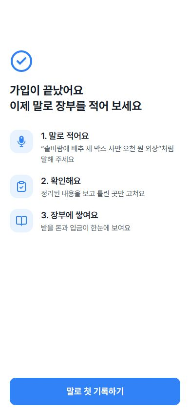
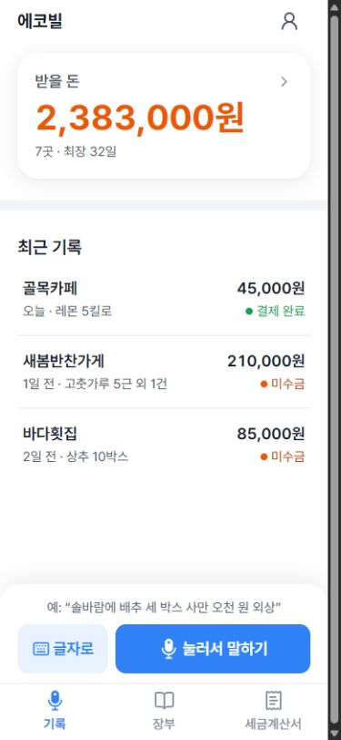
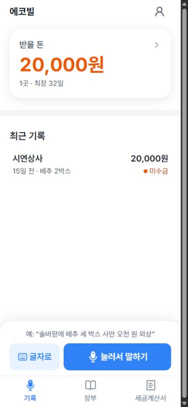
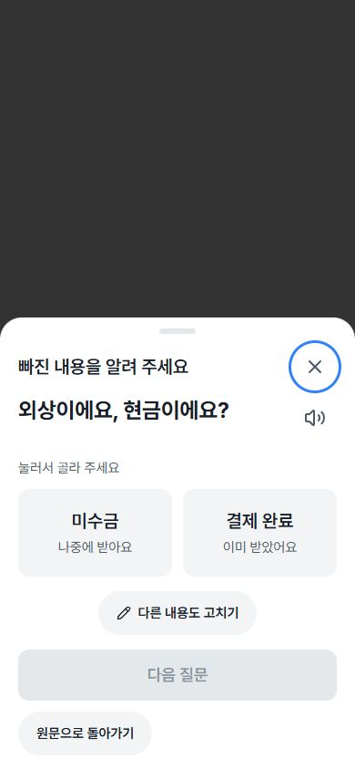
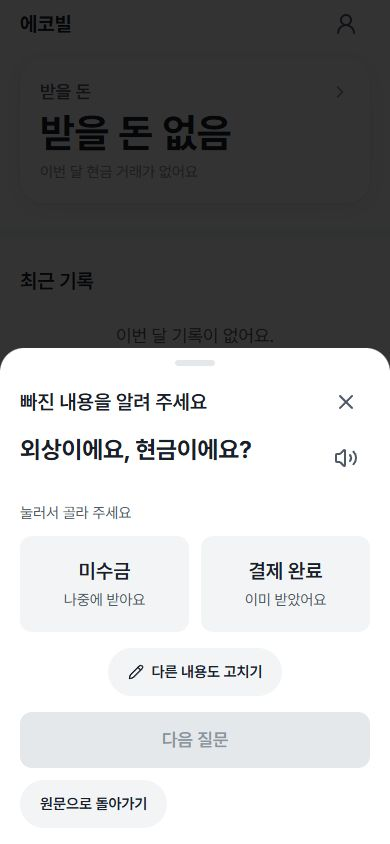
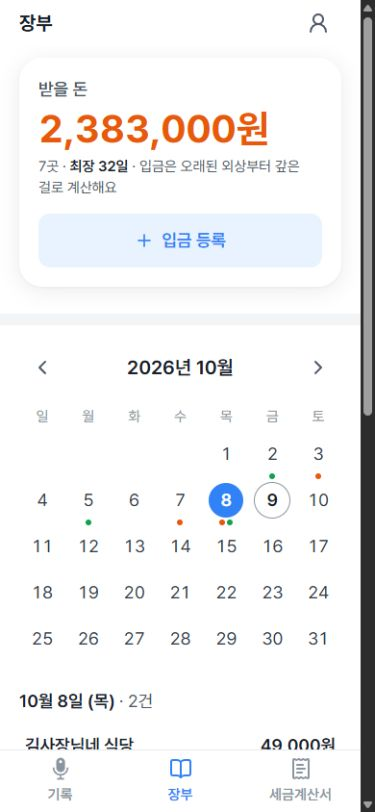
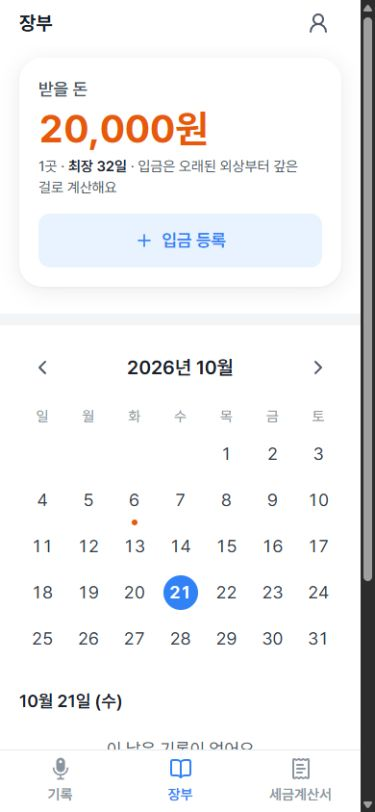
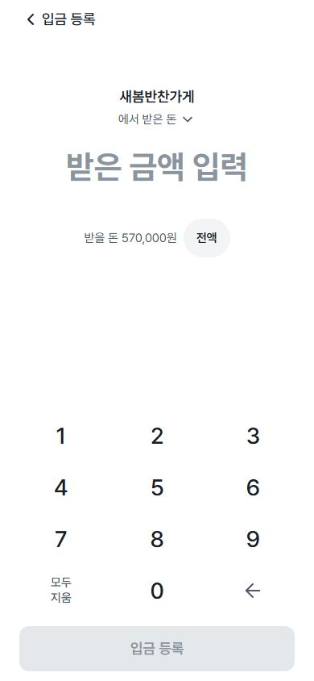
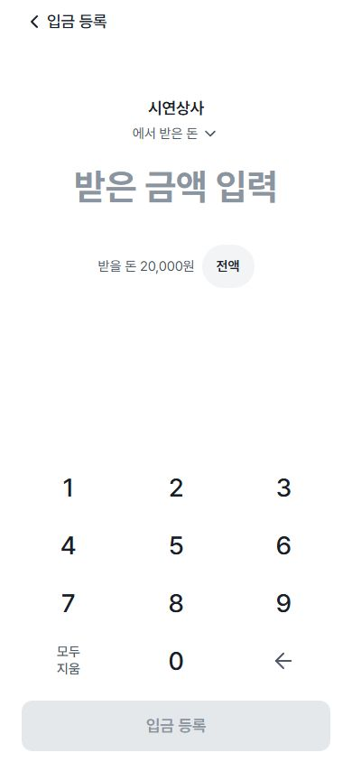
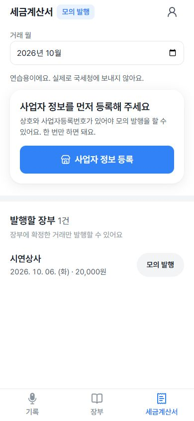

가입 완료


2026-10-21 · 동일한 390×844 뷰포트. 왼쪽은 /design, 오른쪽은 가상 API를 연결한 실제 페이지입니다. 실제 로그인·입금·음성 호출은 없습니다.
합성 거래명·금액·기록 수·선택 날짜는 다릅니다. 구조·헤더·간격·탭·조작 영역 비교 자료이며 픽셀 일치나 운영 데이터 검증 결과가 아닙니다. 가입 완료 화면은 공용 WelcomeView fixture입니다.
헤더가 있는 화면의 행은 48px. 가로 넘침 없음. 세금계산서의 누락된 거래 월과 미리보기 하단 탭 위치를 수정했습니다. 로그인 연결 화면의 설정 미준비 안내는 로컬 카카오 환경변수가 없는 상태입니다.










320×568 추가 확인: 홈·확인·세금계산서 실제 페이지와 세금계산서 미리보기의 가로 넘침 없음, 탭 하단 568px. iOS·Android 카톡의 키보드·Safe Area·마이크 품질은 실기기에서 별도로 확인해야 합니다.